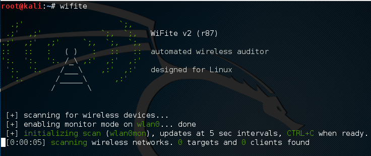
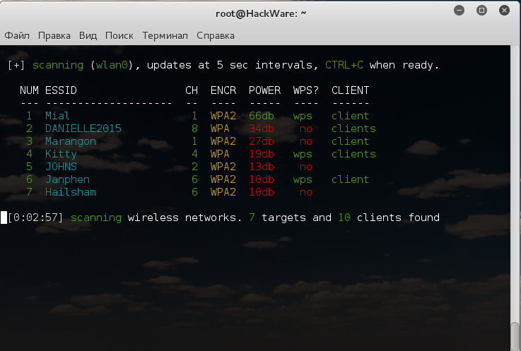

📘 Présentation de Wifite
Wifite est un outil automatisé conçu pour attaquer les réseaux Wi-Fi protégés par des clés WEP et WPA. Il permet de réaliser des attaques par dictionnaire sur les clés WEP et WPA, en capturant les paquets et en exploitant les vulnérabilités des réseaux Wi-Fi.
💻 Étapes pour utiliser Wifite
Voici les étapes pour utiliser Wifite et réaliser une attaque par dictionnaire sur un réseau Wi-Fi :
1. Démarrer Wifite
Lancez Wifite avec la commande suivante :
2. Choisir le réseau cible
Une fois Wifite lancé, il va scanner les réseaux Wi-Fi à proximité. Sélectionnez le réseau cible en fonction de son numéro dans la liste affichée.
3. Choisir le type d'attaque
Wifite propose plusieurs types d'attaque, parmi lesquels :
- WPA: Attaque par dictionnaire sur le mot de passe WPA.
- WEP: Attaque par dictionnaire sur la clé WEP.
- WPS: Tentatives d'attaque via le protocole WPS.
4. Lancer l'attaque par dictionnaire
Pour effectuer une attaque par dictionnaire, utilisez la commande suivante, en spécifiant le fichier de mots de passe à tester (par exemple, `rockyou.txt`) :
Wifite commencera alors à capturer des paquets des réseaux Wi-Fi à proximité et à tester les mots de passe présents dans le fichier de dictionnaire.
5. Attente de la découverte du mot de passe
Wifite va récupérer des trames du réseau cible. Le processus peut prendre un certain temps, car le nombre de paquets capturés varie selon les conditions de chaque attaque. Une fois un nombre suffisant de paquets capturés, l'outil commencera à tester les mots de passe du dictionnaire. Cela peut prendre plusieurs minutes ou plusieurs heures.
6. Résultat obtenu
Lorsque Wifite découvre le mot de passe correct, il l'affiche à l'écran. Un exemple de sortie pourrait être :
🖼️ Captures d'écran
Voici quelques captures d'écran illustrant l'attaque avec Wifite :
 
🎯 Résultat obtenu
🧠 Analyse et utilité
- Wifite met en évidence les vulnérabilités des réseaux Wi-Fi utilisant des clés faibles ou des protocoles obsolètes comme WEP.
- Il montre l'importance de la sécurisation des réseaux sans fil par l'utilisation de mots de passe longs et complexes, ainsi que des protocoles de sécurité récents comme WPA3.
- Il peut être utilisé pour des tests d'audit de sécurité dans un cadre légal sur des réseaux dont vous avez l'autorisation d'accès.
📚 Source et Références
Wifite est un outil open-source utilisé dans le domaine de la cybersécurité pour tester la sécurité des réseaux Wi-Fi. Il doit être utilisé de manière responsable et toujours avec l'autorisation explicite des propriétaires des réseaux.